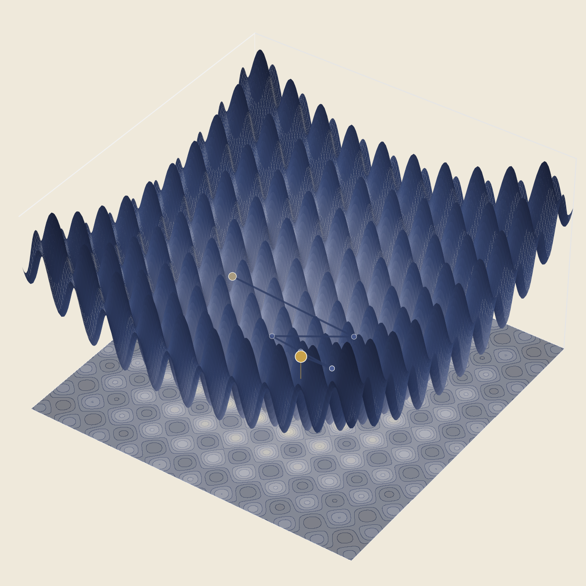

Top 0.4% among 10,000+ candidates, University Master's Degree Entrance Exam (Konkour), Industrial Engineering
Email: alireza.kavoosi@ut.ac.ir
Artin (Alireza) Kavoosi
I am an M.Sc. candidate in System Modeling and Data Analytics at the University of Tehran, working on decision-making under uncertainty, reinforcement learning, and optimization for perishable and safety-critical supply chains. My work spans dynamic pricing, inventory control, and combinatorial optimization, with an emphasis on methods that are theoretically grounded and useful in practice.
News
- Sep 2026New interactive note: An interactive counterexample to greedy-degree.
- Aug 2026Completed the OR Visualizations series with Simulated Annealing.
- Jul 2026Released the Stochastic Queens Elimination preprint and companion materials.
01
Featured Projects
-
Stochastic Queens Elimination (SQEP)2026
A finite-horizon MDP for a stochastic elimination variant of n-queens, with Adaptive Coverage Greedy, a worst-case approximation guarantee, and an exact MIP for the deterministic case.
-
Deep RL for Perishable Pricing & Inventory Control2025
A deep-reinforcement-learning approach to joint dynamic pricing and inventory control for perishable products, published in Expert Systems with Applications.
-
OR Visualizations2026
A three-part, from-scratch visualization series on genetic algorithms, ant colony optimization, and simulated annealing, designed to make each algorithm's search dynamics visible.
02
Interactive Research
 Optimization Foundations
Max-Cut on a Sphere
A graph, a sphere, and one random plane.
See note
Optimization Foundations
Max-Cut on a Sphere
A graph, a sphere, and one random plane.
See note

Optimization Foundations Genetic Algorithm Evolution A real-valued genetic algorithm searches the Rastrigin function. Open interactive SQEP
S-SQEP policy simulator
Step through three policies on the same board and compare their cumulative cost with the exact optimal value.
Open interactive
SQEP
S-SQEP policy simulator
Step through three policies on the same board and compare their cumulative cost with the exact optimal value.
Open interactive
03
Selected Publications & Preprints
Full record on Google Scholar.
Published
-
2025Dynamic pricing and inventory control of perishable products by a deep reinforcement learning algorithmExpert Systems with Applications, 291, 128570.Published doi.org/10.1016/j.eswa.2025.128570
Preprint
-
2026
Working papers
Selected manuscripts currently under review or submitted.
-
—Coordinating pricing and replenishment in a blood supply chain with deep reinforcement learningUnder Review
-
—Disruption-resilient blood supply chain by a structural causal graph dynamics and decentralized reinforcement learning approachUnder Review
-
—Cross-Entropy Neural Networks for Mixed Strategies in a Finite-Horizon Supplier–Retailer Inventory Duopoly with Lead Times and RationingSubmitted
-
—Online Learning of Neural Ordinary Differential Equations for Dynamic Inventory Control Under Non-Stationary DemandSubmitted
Talks & Presentations
-
2025MDP Seminar, University of TehranI attended an invited seminar delivered by Dr. Jamili, which provided an exploration of Markov Decision Processes, foundational reinforcement learning literature, the Bellman optimality equation, and classical applications.
-
20242nd Conference on Future Directions for Industrial Engineers, Postgraduate StudiesInvited talk for the University of Tehran Industrial Engineering Scientific Associate (UTIESA). Presented in Farsi.May 2024 View slides (Farsi)
05
Background
Education
- Sep 2023 — presentM.Sc., System Modeling and Data AnalyticsUniversity of TehranGPA: 18.74/20 (4/4) · Supervisor: Prof. Reza Tavakkoli-Moghaddam · Expected completion: Dec 2026
- Sep 2019 — Jun 2023B.S., Industrial EngineeringKharazmi UniversityGPA: 16.44/20
Research
Research Assistant — University of Tehran
Sep 2024 — Present
Research on inventory control and supply-chain decision problems under the supervision of Prof. Reza Tavakkoli-Moghaddam.
Selected Honors
Top 1% among 150,000+ candidates, Nationwide University Entrance Exam (Konkour), Mathematics and Physics
06
Contact
For correspondence, please email alireza.kavoosi@ut.ac.ir. I welcome research-related inquiries and collaboration opportunities in operations research, machine learning, and supply chain optimization.